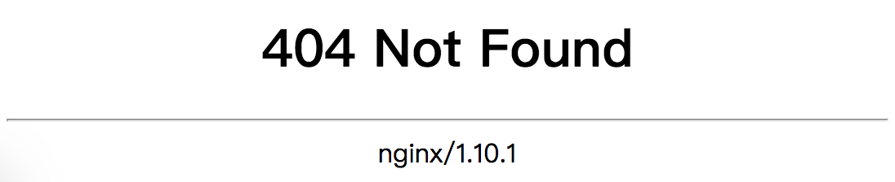
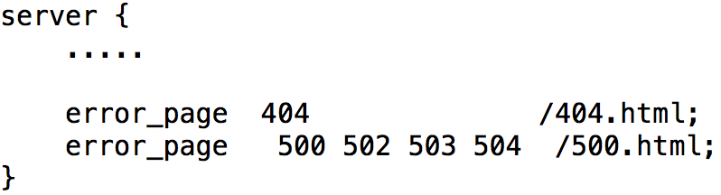
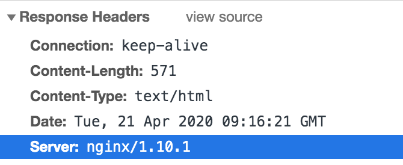
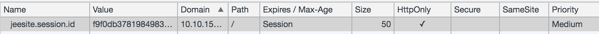
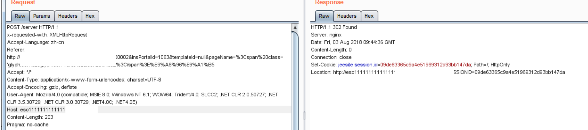
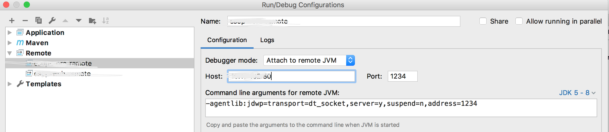

Web安全漏洞
中间件程序版本信息泄漏【低风险】
未设置统一的错误提示页
系统没有设置统一的错误提示页面，在404、302、500等错误页面中将直接显示系统使用的中间件的版本信息。另外，在HTTP响应数据包的Header部分也可能泄漏中间件的版本信息。

解决方法：设置统一的错误提示页，可在Nginx的server中配置统一的错误指向页面。

Response Headers中的Server信息暴露了中间件的版本

在Nginx中：修改fastcgi.conf配置文件。配置项：
fastcgi_param SERVER_SOFTWARE nginx/$nginx_version;
jQuery版本泄露
jQuery中可能会存在漏洞，所以需要隐藏jQuery版本信息。
越权访问【中风险】
系统并没有判断用户登录状态或访问权限，导致越权访问。
一：未判断用户登录状态而造成的越权访问
目前web的登录状态判断都是通过filter或类filter机制实现的，造成这种越权访问的原因就是过滤不严，梳理并修改过滤规则即可。
二、用户已登录，在没有该菜单权限的基础上，直接通过菜单url访问造成的越权访问
- 如果该web是jsp，可以在后台添加过滤器拦截
- 如果是html，前端路由是否可以做前置校验
- 如果可以做统一的前置校验，如VUE，
router.beforeEach((to, from, next) => {})，可以在这里拦截，先判断是否是菜单，再通过权限拦截 - 如果不能做统一拦截，可以考虑header中引入统一的js文件，逻辑也是先校验是否为菜单，再通过权限拦截
- 如果可以做统一的前置校验，如VUE，
系统无超时退出功能【低风险】
不具备超时退出功能的应用系统很可能被攻击者利用进行身份冒用，进而进行进一步的利用。安全建议：修改程序源代码，添加超时退出功能，比如登录后30分钟无动作则关闭会话。
敏感信息泄露
HTML注释中敏感信息泄露
网站的HTML注释中，存在系统配置相关的敏感信息，这可能导致敏感信息泄漏。有时开发者会忘记从生产环境中除去某些安装、调试或测试注释信息。这些注释信息有可能包括Web用户所不应访问的敏感信息。攻击者可能从这些注释中获得敏感信息以进行进一步的攻击。
和外界系统交互时未加密造成敏感信息泄露
弱加密算法比如base64，相当于明文，也会造成信息泄露
敏感信息未模糊化【高风险】
对客户姓名、身份证、手机号码、地址做模糊化处理。
模糊化应该由统一的模糊化模块进行模糊化。
应用程序未容错【中风险】
应用程序未屏蔽执行过程中的错误信息，直接抛出了异常，造成敏感信息泄漏。攻击者可从程序的错误信息中获得程序开发框架名称及版本、SQL语句、SQL数据库表名、绝对路径等敏感信息。
增加try-catch等容错语句，所有异常必须捕获并处理，禁止直接抛出异常，禁止将异常信息输出到页面中。
目录遍历漏洞
由于中间件配置不当，导致服务器文件目录遍历，攻击者可以直接浏览服务器上存在的所有目录和文件。
会话cookie中缺少HttpOnly属性【低风险】
程序设置的会话cookie未包含HttpOnly属性。攻击者可结合XSS跨站等漏洞，通过往页面中插入恶意JS代码的方式获取用户的会话cookie，进而冒用用户身份发起进一步攻击。
修复方式：为用户cooke设置HttpOnly属性。设置了HttpOnly属性的cookie无法通过js document.cookie获取。

浏览器关闭后会话依然可用
应用系统未对用户关闭浏览器后做事件处理，导致浏览器关闭后会话依然可用，攻击者可利用此缺陷进行身份冒用。安全建议：监测浏览器关闭事件，当发现浏览器被关闭时提示用户是否退出，或直接不提示结束会话。直接调用登出接口。
$(window).bind('beforeunload', function () {
var n = window.event.screenX - window.screenLeft;
var b = n > document.documentElement.scrollWidth - 20;
if (b && window.event.clientY < 0 || window.event.altKey) {
alert("正在退出系统！");
$.ajax({
url: "/logoutUrl",
data: {},
type: "POST",
async: true,
success: function (data) {
},
error: function (data) {
}
});
}
});
短信炸弹【高风险】
应用程序没有限定一段时间内给同一个用户可发送的短信数量，导致形成短信炸弹漏洞。安全建议：修改短信发送模块源代码，限定一段时间内可发送的短信数量。
比如验证码，一分钟内只能发送一次，修改前台和后台，前台发送后开始读秒，后台通过redis实现，发送后，在redis设置一个key，1分钟后失效。
String phoneNumber ="";
String key = "VALIDATE_CODE_" + phoneNumber;
if(JedisUtils.get(key) == null){
JedisUtils.set(key, "1", 60);
sendMessage();
}else{
//1分钟内不能重复发送
}
在实际使用中仍然可能会出现重复发送，攻击者同时发送大量的请求，进入后都会判断不存在key，然后发送短信。解决方法：
1、加分布式锁（手机号码作为共享资源）
String phoneNumber = "";
String key = "VALIDATE_CODE_" + phoneNumber;
if (JedisUtils.setNX(key, "1") == 1) {
JedisUtils.expire(key, 60);
sendMessage();
} else {
//1分钟内不能重复发送
}
2、图形验证码，但这个也会存在问题
内部IP信息泄露【中风险】
对攻击者而言，泄露的内部IP非常有价值，因为它显示了内部网络的IP地址方案。知道内部网络的IP地址方案，可以辅助攻击者策划出对内部网络进一步的攻击。
图形验证码可重复使用【高风险】
程序存在逻辑问题，没有限定图形验证码的使用次数，导致图形验证码可重复使用。攻击者可利用此缺陷绕过图形验证码的防护进行暴力猜解攻击。
安全建议：在服务端限定并校验图形验证码的使用次数，每个图形验证码只能使用一次，使用完成后从session中清理掉，然后前台控制每次登录请求完成后，如果失败立刻刷新验证码。
HTTP主机头攻击【高风险】
应用程序根据客户端提供的HTTP Header中的Host字段来确定页面中Location 的值，但并没有判断Host字段的合法性。攻击者可以任意伪造Host字段的值，以使应用程序执行任意JS/HTML脚本，攻击者可以很方便的实现网络钓鱼、XSS跨站、挂马等攻击。

安全建议：验证Host字段的合法性。
ZooKeeper/Redis/Elasticsearch未授权访问
1、设置授权访问
2、通过iptables限制访问源
枚举漏洞【高风险】
用户枚举漏洞，号码枚举漏洞，订单枚举漏洞。是否存在这样的接口，比如：
1、判断手机号码是否在系统中已经存在，通过暴力枚举就可以获取到已注册的手机号码
2、在登陆过程中，输入错误的账号系统会提示账户不存在，这可以为攻击者枚举系统用户名
3、订单编号采用自增主键，这样就可以拿到订单总量，如果有类似http://ip:port/getOrderInfo/orderId，类似这样的接口就可以顺序抓取所有的订单信息（涉及机密的数据一定不能采用自增主键）
任意文件上传漏洞
应用系统没有验证上传文件的合法性，导致攻击者可以上传恶意文件到服务器，达到获得webshell控制应用系统甚至控制服务器的目的。
安全建议：
1、在前端限制可上传的文件类型（通过文件后缀限制）；
2、在后端验证上传文件的合法性（通过魔数验证文件类型，一般情况下每种类型的文件都有自己的魔数，这也不能达到100%，比如excle的魔数是0x504B，同样提供一个txt文件，首字符是PK，也一样是0x504B）；
3、限制上传文件的可执行权限。
任意文件读取
是否存在这样的场景：在下载文件的时候不是提供的文件编号ID而是提供的文件路径，下载时直接读取指定路径的文件，这样就可以任意构造路径，比如：../../../etc/my.cnf。
安全建议：文件统一通过表记录管理，下载文件时只提供记录的编号，后台根据ID拿到路径，再下载。
JDWP远程命令执行【中风险】
JDWP（Java Debugger Wire Protocol）：即Java调试线协议，是一个为Java调试而设计的通讯交互协议，它定义了调试器和被调试程序之间传递的信息的格式。说白了就是JVM或者类JVM的虚拟机都支持一种协议，通过该协议，Debugger 端可以和 target VM 通信，可以获取目标 VM的包括类、对象、线程等信息，在调试Android应用程序这一场景中，Debugger一般是指你的develop machine 的某一支持 JDWP协议的工具例如Android Studio 或者 JDB，而 Target JVM是指运行在你mobile设备当中的各个App（因为它们都是一个个虚拟机 Dalvik 或者 ART），JDWP Agent一般负责监听某一个端口，当有 Debugger向这一个端口发起请求的时候，Agent 就转发该请求给 target JVM并最终由该 JVM来处理请求，并把 reply 信息返回给 Debugger 端。
线上要关闭JDWP。
Tomcat开启远程调试：./bin/catalina.sh jpda start（底层实现和下面的类似），默认8000端口
Java进程开启远程调试：启动参数中添加-agentlib:jdwp=transport=dt_socket,address=1234,server=y,suspend=n
IDEA连接：

未限制用户可输入的长度
应用系统未对用户可输入长度作出限制，恶意攻击者可以通过提交大量垃圾信息造成应用程序/数据库溢出。
使用了不安全的HTTP方法
未禁止使用delete、put等方法，恶意用户或攻击者一旦成功利用此漏洞，将可以通过调用Delete方法恶意删除服务器中的文件，可以调用Put方法上传恶意文件到服务器。
输入数据验证逻辑漏洞
对输入的数据，比如身份证号，仅前端验证，提交到后端后未再次验证。